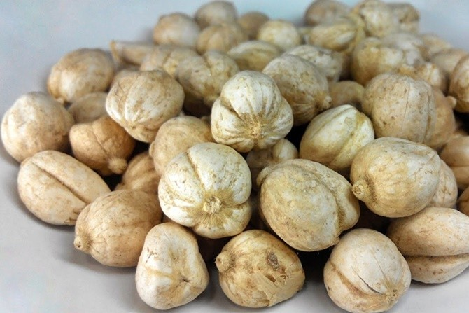

Kapulaga adalah sejenis rempah yang dihasilkan dari biji beberapa tanaman dari genera Elettaria dan Amomum dalam keluarga Zingiberaceae (keluarga jahe-jahean). Kedua genera ini adalah tanaman asli Bangladesh, Bhutan, India, Indonesia, Nepal, dan Pakistan; biji kapulaga dapat dikenali dari biji polongnya yang kecil, penampang irisan segitiga, dan berbentuk gelendong kumparan, dengan kulit luar yang tipis, dan biji hitam yang kecil.